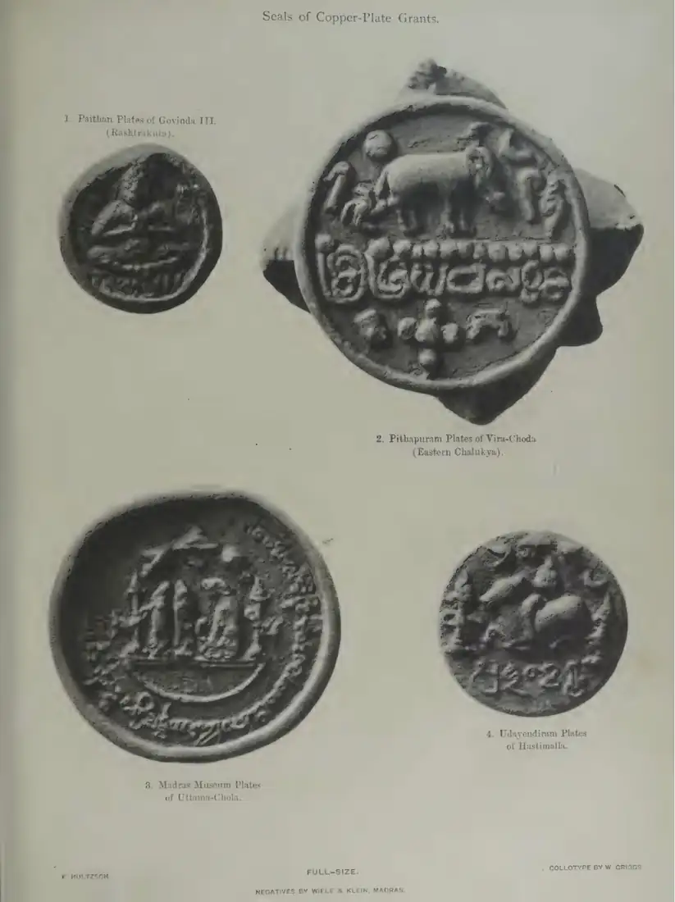
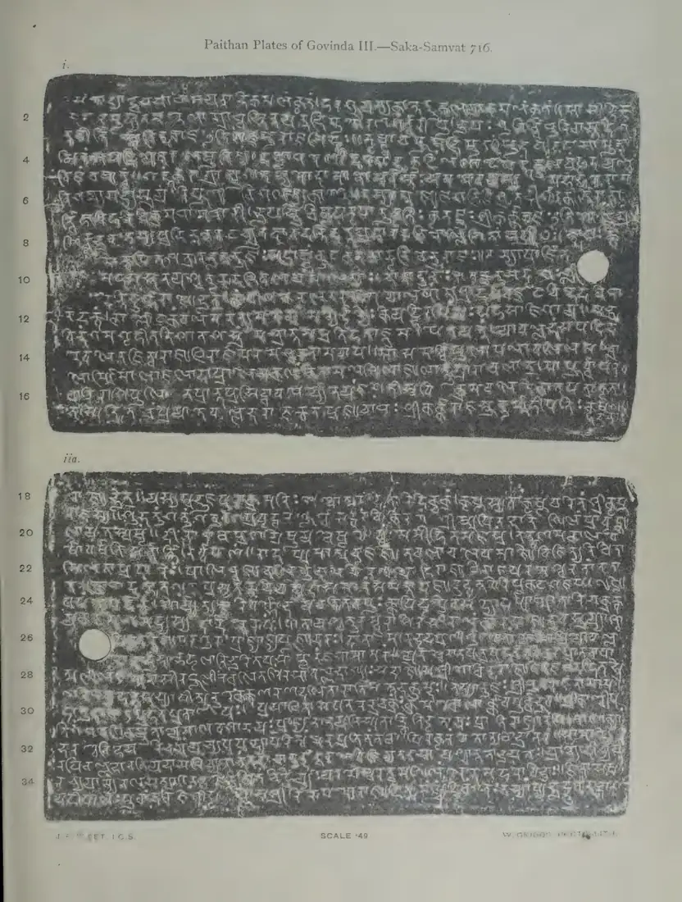
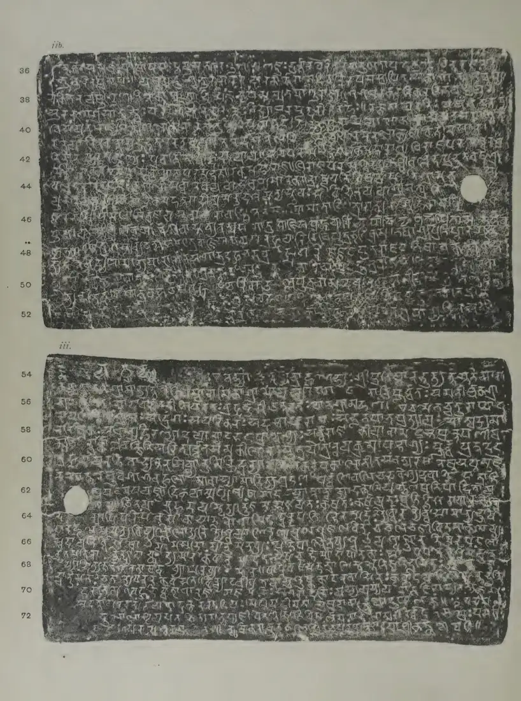

Paiṭhaṇ plates of Gôvinda III. ; Śaka-Saṁvat 716
PAITHAN PLATES OF GOVINDA III.
SAKA-SAMVAT 716.
SAKA-SAMVAT 716.
BY F. KIELHORN, PH.D., C.I.E.; GÖTTINGEN.
This record is now brought to notice for the first time. I edit it from excellent ink-impressions, made by Dr. Fleet from the original plates, which belong to Tirkam Râi Tâtyâ Kâsâr Sêt, a resident of the well-known Paithân,— the ancient Pratishthâna,— on the Gôdâvarî, in the Nizâm's Dominions, lat. 19° 29' N., long. 75° 28' E.
The plates are three in number, each measuring from 13½" to 13¾" long, by from 8" to 8½" broad at the ends, and somewhat less in the middle. The edges of them were fashioned thicker, so as to serve as rims to protect the writing; and the inscription is mostly in a state of excellent preservation. But the surface of the second side of plate ii. was not made properly smooth for engraving, as the other surfaces were. The result is a good deal of confusion, caused by numerous markings in the copper itself. And the difficulty of dealing with this part of the inscription is enhanced by the fact that, in the lower lines of this plate and in the first line of plate iii., the record has been seriously tampered with, for the purpose of reducing the number of grantees from seven to four.— The ring on which the plates are strung is circular, about thick and 3 in diameter. It had not been cut when the grant came into Dr. Fleet's hands. The seal (see the Plate at page 104), into the socket of which the ring is soldered, is roughly circular, about 1 in diameter. In relief on a countersunk surface, it has a representation of Garuđa, squatting, and facing full-front; his hands are joined, palm to palm, on the chest, and are turned upwards; his feet are joined sole to sole, and are turned downwards; and the marks at each side denote his wings. The seal is practically identical with the seals of the Sâmângađ grant of Dantidurga (Ind. Ant. Vol. XI. p. 112, Plate), and of the Old-Kanarese grant of Gôvinda III. (ibid. p. 126, Plate). But it is a much better specimen, and shows the details far more clearly. Below the Garuđa there is a floral device,— apparently an expanded water-lily; he is probably supposed to be seated on it.— The weight of the three plates is 357 tolas, and of the ring and seal, 55; total, 413 tolas.— The engraving is good, bold, and fairly deep; but, the plates being substantial, the letters do not show through on the reverse sides. The interiors of them show, as usual, marks of the working of the engraver's tool.— The characters are Nâgarî. Here and there they are drawn rather carelessly, so that, especially in the case of proper names, it is not always possible to say what exactly may be intended. In general, the forms of the letters are the ordinary ones of the period to which the inscription belongs; but the sign for the conjunct ry, which occurs in the word kâryâ in line 64, is quite unusual, and is apparently a remnant of an earlier form of the Nâgarî alphabet.1 The average size of the letters is a little less than
1 See Dr. Fleet's Gupta Inscriptions, p. 202.
4th.— The language is Sanskrit. Down to the middle of line 42 the inscription is in verse, and five benedictive and imprecatory verses occur in lines 68-73; the rest is in prose. The number of verses at the beginning is 28. Of these, verses 1-19 occur in the same order, but with some various readings and partly damaged, in the Kâvî grant of Gôvinda IV. (Ind. Ant. Vol. V. p. 145), which also contains verse 26, beginning with rakshatâ yêna in line 39 of the present inscription, and verse 28, beginning with tên=êdam in line 41. Of the remaining seven verses, verses 23-25, beginning with tasy=âpy=abhûd in line 35, are found, in a less correct form, in the Kâpadvanaj grant of Krîshṇa II. (Ep. Ind. Vol. I. p. 54). Accordingly, the verses which are peculiar to this inscription are only four, viz. verses 20-22, beginning with śrî-Kâñchîpati in line 30, and verse 27, beginning with a[yam=â]rât in line 40. As regards lexicography and grammar, attention may be drawn to the word prâtirâjya, which in line 31 is used as a masculine noun, evidently in the sense of pratirâja, 'a hostile king,' and to the redundant suffix ka1 in âchchhîdyamânaka in line 67, as well as in the ordinary yathâsañva(ba)dhyamânaka in line 44.— The orthography calls for few remarks. The letter b is throughout denoted by the sign for v; the dental sibilant is occasionally employed instead of the palatal, e.g. in asêsha, line 34, and satêshu, line 60; and the vowel ri is used instead of the syllable ri in kanakâddrir, line 9, kriyâ, line 62, and śriyam, line 72.2 Besides, we may notice the employment of the guttural nasal instead of anusvâra in the word sîñha in line 3, the use of the avagraha to denote the elision of a in line 30, and the spelling of the words upalachchita for upalakshita in line 57, pratipâlaitavya for pratipâlayitavya in line 66, and âdnayâ (?) for âjñayâ in line 73.
The inscription is one of the Râshṭrakûṭa Gôvindarâja III. or, as he is described in lines 42-44, the Paramabhaṭtâraka Mahârâjâdhirâja Paramêsvara Pṛithvîvallabha Prabhûtavarsha Śrîvallabha-narêndradêva, who meditated on the feet of the Paramabhaṭtâraka Mahârâjâ-dhirâja Paramêsvara, the illustrious Dhârâvarshadêva, i.e. his father Dhruvarâja Nirupama. In the introductory metrical portion the genealogy of Gôvindarâja III. is given, beginning with Gôvindarâja I., exactly as in other inscriptions of the same dynasty (Gôvindarâja I.; his son Karkarâja; his son Indrarâja II.; his son Dantidurga Vallabharâja; Karkarâja's son Krîshṇarâja Šubhatunga Akâlavarsha; his son Gôvindarâja II. Vallabha; his younger brother Dhruvarâja Nirupama; and his son Gôvindarâja III.); and what is new in this inscription are only the verses in lines 30-34, which relate to the circumstances under which Gôvindarâja II. was succeeded by his brother. After having stated in line 29 that Gôvindarâja's younger brother was Dhruvarâja, our inscription goes on somewhat like this :—
“Although that brother (Gôvindarâja) of his had fetched in large numbers those hostile kings even, the ruler of Mâlava and others, who were joined by the lord of Kâñchî, the Gaṅga, and him of Vêngî, his (i.e. Dhruvarâja's) mind underwent no change in regard to him, when afterwards he (Dhruvarâja) had possessed himself of his ruby-ornaments and his store of gold. When even after his (i.e. Dhruvarâja's) conciliatory overtures Vallabha (Gôvindarâja) did not make peace, then (Dhruvarâja) speedily defeated him in a battle offered by the brother, and he afterwards drove away the eastern and northern opponents, and obtained the whole sovereignty . . . .”
Some other inscriptions only state in general terms that Gôvindarâja II. was superseded by his younger brother Dhruvarâja, while the Dêôli grant3 of Krîshṇarâja III. records that “sensual pleasures made Gôvindarâja careless of the kingdom, and that, entrusting fully the universal sovereignty to his younger brother, Nirupama, he allowed his position as sovereign to become loose.” From the present inscription it would rather appear that Dhruvarâja
1 See Dr. Fleet's Gupta Inscriptions, p. 69.
2 In the proper name Rishi in line 48, assuming the reading to be correct, ri is used instead of ri.
3 See Journal, Bombay Branch, R. A. S., Vol. XVII. p. 239.
Plate 1 is bound after this page.
revolted against and defeated his brother, even though the latter, to protect himself, had formed an alliance with kings who otherwise were hostile to the Râshṭrakûṭa family.1
The formal part of this inscription, also, does not differ materially from the corresponding portions of other Râshṭrakûṭa grants. It records (in lines 42-62) that the king, being encamped near Pratishṭhâna, and having bathed in the river Gôdâvari, on the occasion of a solar eclipse on the new-moon tithi of the dark half of Vaiśâkha in seven centuries of years, increased by sixteen, elapsed since the time of the Śaka king (i.e. in the Śaka year 716), granted the village of Limbârâmikâ, situated in the [Sârâ]kachchha village group of Twelve in the Pratishṭhâna bhukti, to a number of Brâhmaṇas, for keeping up the five great sacrifices and other purposes. The boundaries of this village were, to the east the village Samatirthaka, to the south the river Gôdâvari, to the west a locality named Brahmapuri, and to the north the arable land (?)2 of the village of Dhôna (?). The names and a description of the grantees are given in lines 47-54. There can be no doubt that their number originally was seven, but, as stated before, the inscription has here been seriously tampered with, for the purpose of reducing this number to four, and, perhaps, in order to substitute, at least in one case, another name for the one which was originally engraved. Of each of the grantees the inscription gave not only the father's name and the gôtra and Vêdic school to which he belonged, but also the place of residence. But, with the exception of Pratishṭhâna which occurs in line 48, the names of these places are either altogether illegible, or so indistinct that they cannot be read with confidence. The gôtras mentioned are those of Vatsa, Pârâśara, Vaiśishṭha, Saitêha (?), Hârîta (?), and Kâśyapa; the Vêdic schools those of the Vâjins or Vâjasanêyins, Bahvṛichas, Taittirṛyas, and Mâdhyaindinas.—Lines 63-72 contain the usual admonition to protect the donees in the enjoyment of this grant, and quote five of the customary benedictive and imprecatory verses; and the concluding line 73 gives the names of the dûtaka and of the writer of the grant, both of which are so carelessly written that I am unable to say what they are.
The date of the inscription— the new-moon tithi of the dark half of Vaiśâkha of Śaka-Saṅvat 716— corresponds, for Śaka-Saṅvat 716 expired and the amânta Vaiśâkha, to the 4th May, A.D. 794, when there was a total eclipse of the sun which was visible in India, at 3 h. 48 m. after mean sunrise. It is, so far as I know, the earliest date from a genuine inscription of India proper which shows the amânta scheme of the lunar fortnights; and it is ten years earlier than the oldest date3 which has been hitherto available for the reign of Gôvindarâja III.
With the exception of Pratishṭhâna itself, I am unable to identify any of the places mentioned in this inscription.
TEXT.4
First Plate.
1 Ôm5 [||*] Sa6 vô=vyâd=Vêdhasâ dhâma yan-nâbhi-kamalam kṛitaṅ | Haras=cha yasya kânt-êndu-kalayâ kam=alamkṛitaṅ || 7Âśid=ni[sha?]-
2 t-timiram=udyata-maṇdalâgrô dhvastin=nayann=a[bh]imukhô raṇa-śarvvarṛpu(shu) | bhûpaḥ śuchir=vvidhur=iv=âsta(pta)-diga-
1 On Dhruvarâja see Dr. Fleet's Dynasties of the Kanarese Districts, p. 33, and Dr. Bhandarkar's Early History of the Dekkan, p. 49.
2 The word of the original (in line 56) which I have doubtfully translated by 'arable land,' is hala. The ordinary meaning of this word is 'plough,' and it is also used as a measure of land; but neither of these two meanings would be suitable here.
3 viz. the date of the Old-Kanarese grant of Śaka-Saṅvat 726, which works out properly only with the pûrṇimânta scheme of the lunar month; Ind. Ant. Vol. XI. p. 126, and Vol. XVII. p. 141.
4 From impressions prepared by Dr. Fleet.
5 Expressed by a symbol.
6 Metre; Ślôka (Anushṭubh).
7 Metre: Vasantatilakâ; and of the next verse. Read =dvisha-.
3 nta-kírttir-Ggóvindarája iti rájasu rája-si[ñha]h1 || Drishtvá chamúm=abhimukhín
subhat-áttahásám=unnâ.
4 mitam sapadi yé[na] ranêshu nityam | dasht-ádharêna2 dadhatá bhrukuțin laláté
khađgam kulam cha hridayañ=cha
5 nijam cha satvain3 || Ga(kha)đgam4 kar-ágrán=mukhata[sya(s=cha)] sôbhâ mánô
manastah samam=êva yasya [|*] mabhâbhavé6 náma
6 nisámya sadyas=trayam ripûnâm vigalaty=akândé || 6Tasy=átmajô jagati viśruta-dírggha-
kírttir=ártt-â.
7 rtti-hâri-Hari-vikrama-dhâma-dhârí | bhúpas=trivishtapa-nřip-ânukritih kritajñah śrí-
Karkkarája iti gôtra-ma-
8 nřir=vva(bba)bhúva |(||) Tasya prabhinna-ka[ra]ťta-chyuta-dána-danti-danta-prahâra-
ruchir-ôllikhit-âmsapíthah | kshmâpah kshi-
9 tau kshapita-śatrur=abhút=tanûjah sad-Ráshtrakúťa-kanakádri(dri)r=iv=Éndrarájah ||
7Tasy=ópárjita-
10 mahasas=tanayas=chaturudadhi-valaya-málinyâh | bhóktá bhuvah Šatakratu-sadrišah śrí.
11 Dantidurggarájô=bhút |(||) 8Kámchiša-Kéralanarádhi[pa]-Chóla-Pándya-śri-Harsha-
Vajrata-vibhéda-vidhâ-
12 na-daksham | Kárnnátakam va(ba)lam=anantam9=ajêyam=anyair=bhrityaih kiyadbhir-
api yah sahasâ jigâya || [Sa]bhr[ú]-10
13 vibhaingam=agríhíta-nišáta-śastráimm=11aśrântam=apratihat-ájñam=apêta-yatnam | yô Va-
llabham sapadi da-
14 nđa-va(ba)lêna12 jitvâ rájádhirájaparamêsvaratám=avâpa || Â13 sêtôr=vvipul-ópal-âvali-
lasal-lô-
15 l-ôrmmi-málâ-jalád=â prálêya-kalamkit-âmala-sílâ-jálát=tuyâ(shâ)ráchalát | â púrvv-
ápara-14
16 várirási-pulina-prânta-prasiddh-ávadhêr=yyên=êyam jagatí sva-vikrama-va(ba)lên=aikáta-
patrá15 kritâ |(||)
17 16Tasmin=ditanram17 prayáté Vallabharájé kshata-prajâ-vâ(bâ)dhah [|*] śrí-Karkkarája-
súnur=mmahípatih Krí[shnã]-18
Second Plate; First Side.
18 rájô=bhút19 || Yasya svabhuja-parákrama-nihšéth(sh)-ótsádit-ári-dikchakram | Krishnasy-
êv=ákrishna[m] charitam śrí-Kripna(shnã)-
19 rájasya || Šubhatuínga-tuínga-turaga-pravřiddha-rên-úrdhva-ruddha-ravi-kiraṇam [|*]
gríshmê=pi nabhô nikhilam právřitkâ-
20 láyaté spashťam || Dín-ânátha-praṇayishu yathêshťa-ché[shťa]m ma(sa)míhitam=ajasram |
ta[tksha?]nam=Akálava-
1 Read -simhah. 2 Originally °rêpt was engraved, but the sign of the vowel t has been struck out.
3 Read sattvam. 4 Metre: Upajáti. 5 Read maháhavé.
6 Metre: Vasantatilakâ; and of the next verse. 7 Metre: Gíti.
8 Metre: Vasantatilakâ; and of the next verse.
9 Originally °nantyam was engraved, but the sign for y has been struck out.
10 The first akshara (sa) looks rather like a in the original. 11 Read °stram=.
12 The Sámángad plates (Ind. Ant. Vol. XI. p. 112) read damđa-lakéna; and this reading, the sense of which is not apparent, Professor Bühler has adopted for the Káví plates (i.b. Vol. V. p. 146).
13 Metre: Sárdúlavikrídita.
14 After this, va is engraved at the end of the line, but it looks as if it had been struck out again.
15 Read °patrí-křitđ. 16 Metre: Âryâ; and of the three next verses. 17 Read divam.
18 The aksharas actually engraved at the end of this line are křishakha; and below them three other signs are engraved, the first of which looks like the figure I, and the second and third of which are da (or du) and ksha.
19 Above the akshara bhú, the sign of the vowel é is engraved.
Plate 2 is bound after this page.
Plate 3 is bound after this page.
21 rshō varshati sarvv-ārtti-nirvvapanain || 1Rāhappam=âtma-chu(bhu)ja-játa-va(ba)l-âcha(va)lêpam=âjau vijitya nithi(sî)t-â-
22 silatâ-prahâraih | pâli[dhva]j-âvali-[šu]bhâm=achir[ê*]na yô hi râjâdhirâjaparamêsvaratâm tatâ-
23 na || 2Kródhâd=utkháta-kha[ðga]-praspita-ruchi-chayair=bhâsamânain samantâd=âjâv=udvritta-vairi-prakaṭa-gaja-ghat-â[tô]-
24 pa-samċkshó(kshê)pa-dakshain | śauryya-tyakd(kt)-âri-varggô bhaya-cha[ki]ta-vapuh kkâ(kvâ)pi dṛipṭv(shṭv)=aiva sadyô darpp-Ādhmât-âri-chakra-ksha-
25 ya-karam=agamad=yasya dôrddaṇda-rûpain |(||) Pâtâ3 yas=chatur-amvu(mbu)râsî-rasa(śa)n-âlamċâra-bhâjô bhuvas=trayyâś=ch=â-
26 pi krita-ðvi(dvi)j-âmara-guru-prâjy-âjya-pûj-âdarah | dâtâ mânabhṛid=agraṇîr=guṇa-vatâin yô=sau śriyô valla-
27 bhô bhôktum svargga-phalâni bhûri-tapasâ sthânain jagâm=âmarain || Yêna4 śvêt-âtapatra-prahata-ravi-kara-prâ(vrâ)ta-tâpâ-
28 t=salîlain jagnê nâsîra-dhûlî-dhavalita-śirasâ Vallabh-âkhyah sad=âjau [|*] sa śrî-Gôvindarâjô jita-jagad-ahita-strai-
29 na-vaidhavya-h[ê]tus=tasy=âsît=sûnur=êkakshaṇa-raṇa-dalit-ârâti-matt-êbha-kumbhah ||
5Tasy=ânujah śrî-Dhruvarâja-nâmâ ma-
30 hânubhâvô=stpra(pra)hata-pratâpah | prasâdhit-âśêpa(sha)-narêndra-chakrah kramêṇa vâ(bâ)lârkka-vapur=vva(bba)bhûva ||
6Śrî-Kāñchîpa-
31 ti-Gaṅga-Vêṅgika-yutâ yê Mâlavês-âða(da)yah prâjy[â]n=ânayati sma tân=kshitibhṛitô sa(ya)h prâtirâjyân7=api | mâniky-â-
32 bharaṇâchi(ni) hêsa(ma)-nichayain yasya p[r]apady=ôpari* svain [yê?]na prati tain tath=âpi na krîtain chêtô=nyathâ bhrâtarain || Sâm-âdyê(dyai)-
33 r=api Vallabhô na [hi?]8 yadâ sa[in*]dhirin vyadhât=tain tadâ 9[bhrâ?]tur=dda[tta]10-raṇê vijitya ta[ra]sâ paśchât=tatô bhûya[ta?]h11 | prâchy-ôdîchya-[pa]-
34 rachyapâsya12 cha lasat-pâlidhvajair=[bhû?]shitain chihnair=yyah paramêsvaratvam=akhilain lêbhô(bhê) mahanô13 vibhuh ||
14Jit-âsê(śê)sha-
35 pa(ma)hîpâlah. Pu[ra]inda[ra]15-jigî[sha]yâ [|*] sa śrî-Nirupamô râjâ hi[tv]â martyain divain gatah [||*] 16Tasy=âpy=abhûd=bhuvana-bhâ[ra]-
Second Plate; Second Side.
36 bhṛitau samarthah. Pâr[th]-ôpamah Pṛi[th]u-sa[mâ]na-guṇô guṇajñah [|*] durvvâra-vairi-tarit-17âtula-tâpa-hêtur= [Ggôv]indar[â]ja [i]ti
37 sûnur=ina-pratâpah || Yas(ś)=cha prabhuś=chatura-[ch]âru[r=u]dâra-kîrbhe(rttê)r=â[sê]-divân=Nirupamasya pîtuh sakâśât | satsv=apy=a-
1 Metre: Yasantatilakâ. The third akshara of the first word is distinctly ppa.
2 Metre: Sragdharâ.
3 Metre: Śârdúlavikrîđita. 4 Metre: Sragdharâ. 5 Metre: Upajâti.
6 Metre: Śârdúlavikrîđita; and of the next verse.— This verse and the next two verses are not found in any of the published inscriptions of the same dynasty.
7 This word is apparently used here in the sense of pratirâja, 'a hostile king.'
8 The consonant of thiñ akshara might possibly be read n, but the sign differs much from the sign for n employed ordinarily in this inscription.
9 The sign of the akshara in these brackets, again, is quite peculiar, and might possibly be read chđ.
10 This akshara looks rather like nta in the original.
11 Read bhûyasah (?).
12 Read -pardn=vyapâsya (?). 13 Read mahîndrô (?).
14 Metre: Slôka (Anushṭubh).
15 The aksharas in brackets look rather like va in the original.
16 Metre: Vasantatilakâ; and of the next verse.— This verse and the next two verses occur only in the Kâpadvaṇaj grant of Kṛishṇa II.; Ep. Ind. Vol. I. p. 54. The text here given is more correct.
17 Read -vanit.
38 chê(nê)ka-tanayêshu guṇ-âtirêkân=mû[rddhâ]bhipi(shi)kta-nṇipa-sammatam=âshu râjyam ||
1Śaśadhara-kara-nikara-nibham yabhya(sya) yasaḥ
39 suranag-ágra-sânu-sthaih [|*] parigíyatê=nuraktaiḥ2 vidyádhara-sundarí-nivahaih ||
Rakshatá3 yêna nihśêsham chatur-achya(mbu)-
40 dhi-saminyutam | râjyam dharmmêna lôkânâm kritâ tushṭih parâ hridi |(||) A[yam=4
â]rât=p[r]iyô lôkâ[n=yân=adrâ]ksh[í]t samâ[śri]ta[ḥ] [|*]
41 na tê yâ[chita?]vantô=nyam bhûbhritam dhana-trishnayâ |(||) 5Tên=[ê*]dag(m)=
anila-vidyuch-cha[m]chalam=a[va]lôkya jâ(jî)vitam=asâram | [kshi*]-
42 ti-nâ(dâ)na-parama-puṇyaḥ pravarttitô vra(bra)hma-dâyô=yam || Sa cha paramabhatṭâ-
raka-mahârâjâdhirâja-paramêsvara-śr[1*]-
43 mad-Dhârâva[tsa(rsha)]dêva-pâdânudhyâta-paramabhatṭâ r a k a - m a h â r â j â d h i r â j a -
paramêsvara-Pṛithvivallabha-Prabhûtavarsha-Śrî-
44 vallabha-narêndradêvaḥ kuśalî sarvvân=êva yathâsamva(ba)dhyamânakân=râshṭrapati-
vishayapati-grâmakût-â-
45 yukta-niyuktak-âdhikârika-mahattar-âdîn=samanudarśayaty=astu vaḥ samviditam yathâ
śrîmat-Prati-
46 shthâna-[va]hih-samâvâsita-jayasu[r]âdâr-6âvasthitêna mayâ mâtâpitrôr=âtmanas=ch=
aihik-âmushmika-
47 pu[nyâ ?]ya7 [A]vila[vâ ?].[rêśa]-vâstavya-Vatsa-sagôtra-Vâji-savra(bra)hmachâri-
[Bha?]pâditya-8pûta-9Pitâmaha . . . . 10
48 . . . . . 11[bhâdra]-vâstavya-[Va]tsa-sagôtra-Vâjisa[nêya?]-savra(bra)hmachâri-Rishi-12
putra-Bhṛitikrama13 | tathâ śrî-Pratishthâna-[vâ]sta-
49 vya-tat[tr*]aividya-sâmânya-Pârâśara-sagôtra-[va(ba)]h[v*]richa-bha(sa)vra(bra ) h m a -
[châ]ri-Jêjjaṭa-putra-[Râ]jaṭa tithâ14 [Ja]kali-15vâsta-
50 [[vya-[tachchâturvidya]-sâmânya-Vaśishtha-sagôtra-va(ba)hvṛicha-savra(bra)hm a c h â r i -
[Châ?]yaṭa-putra-[Vâ] . . . | tathâ . . . . . vâ]]-
1 Metre: Âryâ.
2 Read °ktair=.
3 Metre: Ślôka (Anushṭubh); and of the next verse.
4 There are so many different marks on the plate here, and some of the letters are so indistinctly formed, that I am not at all sure about the exact wording of the first half of this verse. Apparently the sense of the whole verse is, that Gôvindarâja treated the needy so liberally that they had no reason to apply to other princes for support. In the text given above, I have included in square brackets every letter the reading of which appears to me doubtful. Instead of samâśritaḥ, supposing this to be the correct reading, I should have expected samâśritân.
5 Metre: Âryâ.
6 Read -jayaskandhâvdâr-.
7 Here one would have expected -puṇya-yaśô-bhivriddhayê, which may have been engraved originally.—The following passage, up to the word vrâhmanêbhyaḥ in line 54, has been greatly tampered with, for the purpose of reducing the number of grantees, which originally was seven, to four. To effect this, the original writing of lines 50, 52 and 53, and of portions of lines 51 and 54, has been beaten in; but sufficient traces remain of it, to make out the general sense of what has been effaced. Besides, to judge by the forms of the letters, the names of the grantee and of his place of residence, which occur in line 47, seem to have been engraved in the place of other names; and in line 54 the word chaturbhyaḥ has been added at the beginning (where the original writing is effaced) to do duty for the word saptabhyaḥ, which originally preceded the word vrâhmanêbhyaḥ. That portion of the text which it has been sought to efface, I have included in double square brackets, but I have not been able to restore it completely.
8 Read-'Jayâditya- (?).
9 Read -putra-.
10 The two aksharas at the end of this line I am unable to make out with certainty; they look like yava or hava, or may be intended for dêva.
11 Here, again, I must omit three aksharas, the first and second of which look like pya (or shya) and vyâ (or chyâ). Apparently the word tathâ is wanted here.
12 Read °châry-Rishi-.
18 This name is quite clear in the engraving, but it can hardly be correct.
14 Read °ta | tathâ.
15 Possibly, what is engraved may be Takali-; and perhaps the word has been engraved in the place of another name.
51 [[sta]]vya-Saitêha(?)-[sa]gôtra-va(ba)hyricha-savra(bra)hmach[â*]ri-[Râ]ulla-putra-Vâmadêva | [[tathâ . . . . vâstavya-tattraividya]]-
52 [[sâmânya-[Hârîta]-sagôtra-[Taittiriya]-savra(bra)hmachâri- . . . . -putra- . . . . . kumâra | tathâ [Ka]]-
53 [[¹chchauraja-vâstavya-Kâśyapa-sagôtra-Mâdhyandina-savra(bra)]]-
Third Plate.
54 [[hmachâri ?]]² chaturbhya êtêbhyô³ vrâ(brâ)hmaṇêbhyah śrî-Pratishthâna-bhukty-antarggata-[Sârâ ?]-
55 kachchha-dvâdaśa-grâm-âbhyantarê Limvâ(mbâ)râmikâ-grâmô yasy=âghâṭanâni pûrvvatah Samatirthaka-grâ-
56 [ma]h⁴ dakshiṇatah Gôdâvari nadî [a]paratah Vra(bra)hma[p]urî uttaratah [Dhôna]⁵-grâma-ha[la]m⁶ | êvam=êtach-chatur-âghâṭa-
57 n-ôpalachchhi(kshi)tô grâmah sôdraṅgah saparikarah⁷ sadaśâparâdhah sabhútapâta-pratyâyah sôtpadyamâ-
58 nari(vi)shtikah sadhânyahiraṇyâdêyô=chchâ(châ)ṭabhatapravêsyah⁸ sarvvarâjakîyânâm=ahastapraksh[ê*]panîya
59 â-chandr-ârkk-ârnpava-kshiti-sarit-parvvata-samakîlânah⁹ putra-pautr-ânvaya-kram-ôpa-bhôgyah pûrvva-pratta-dê[va]-
60 vra(bra)hma-dâya-rahitô=bhyantarasiddhyâ [bh]ûmichchhidra-nyâyêna Śakanṛipa-kâl-âtita-samvatsara-sa(śa)têshu saptamu(su) jê(shô)-
61 đas-ôttarêshu Vaisâkha-va(ba)hul-âmâyâsyâm=âdityagrahaṇa-parvvani va(ba)li-charu-vaisya(śva)dêv-âgnihâ(hô)tr-âti-
62 [thi]-pada-¹⁰mahâyajñ-âdi-kriy-ôssarppaṇ-â[tha]¹¹ Gôdâṭapyâm¹² snâtv=â[d]y=ôdak-âsi(ti)sarggêṇa pratipâditô¹³ ya-
63 tô=sy¹⁴=ô[ch]itayâ [vra(bra)]hmad[â*]ya-sthityâ [bh]uñjatô bhôjayatah krishatah karshayatah pratidiśatâ(tô) vâ na kaiśchi-
64 d=anp(lp)=âpi paripam[tha]nâ kâryâ tath=âgâmi-bhadra-nṛipatibhir=asmad-vamśyair=vvânanyair=¹⁵vvâ sâmânyam bhûpi(mi)-
65 [dâ]na-phalam=ay[ê*]tya vidyul-lôlâny=anity-aiśva[r*]yâñi triṇ-âgra-lagna-jalavindu-chañchalam cha jîvitam=âkalayya
66 sva-dâya-nirvvisêshô=yam=asmad-dâyâ(yô)=numantavyah pratipâlai(layi)tavyas=cha [[*]] yaś=ch=âjñâna-timira-pa[ta]l-â-
67 vṛita-matir=âchchhindyâd=âchchh[i*]dyamânakam v=ânu[mô]datah¹⁶ sa pañchabhir=mmâhâpâtakôh¹⁷ sôpapâtakais=cha¹⁸ samýukta[h]
¹ This line begins in the original under the akshara rl of the word Taittiriya (?) of the preceding line.
² After this, and before the word êtêbhyô, about 10 or 12 aksharas are almost entirely effaced, and in their place the word chaturbhya has been engraved in very large letters.
³ This was originally êtêbhyah, followed, I believe, by saptabhyô, which has been effaced.
⁴ Here, and in the following, the rules of samdhi have not been observed.
⁵ It is impossible to say whether the consonants of the name in these brackets are really intended to be dh and n; the first of them might possibly be dh or v or ch, and the second n or t.
⁶ This akshara resembles ṇam more than lam in the original. The following sign of punctuation is superfluous.
⁷ One would have expected sôparikarah.
⁸ Originally °prâvêsyah was engraved.
⁹ Read °kâltnah.
¹⁰ Read -pañcha-.
¹¹ Read -kriy-ôtsarppaṇ-ârtham.
¹² Read Gôdâvaryâm.
¹³ Read °pâditah !.
¹⁴ One would have expected here êshâm, and similarly the plural afterwards.
¹⁵ Read v=ânyair=.
¹⁶ Read °dêta.
¹⁷ Read =mmâhâpâtakai î.
¹⁸ This cha is superfluous.
68 syád=ity1=uktain [cha*] bhagana(va)tâ [vê]da-vyás[ê*]na Vyásêna || Shapti(shtí)in2
varsha-sa[ha]srâni svarggê tishṭhati bhûmidaḥ [|*] âchchhêttâ
69 ndhâ(ch=â)numant[â*] cha tâny=êva narakê vasata3 || Vindhy-âtavîpv(shv)=atôyásu
śushka-kôtara-vâsinaḥ [|*] kṛi[sh]nâhayô hi jáyantê bhûmi-
70 4harainti yê [||] Va(ba)hubhir=vva[su]dhâ nujâ6 rájabhih Sagar-âdibhih [|*] yasya
yasya yadâ [bhûti]yadya6 ta[sya] ta[dâ]
71 S[v]a-dattâm para-dâtsa(ttâ)in [vâ] yatnâd=raksha narâhiyaḥ7 | mahîm
[yâ]hîmatâm8 śrêshtha dâvâ(nâ)ch=chhr[ê*]yô=[n]upâla[na]in || Iva9 samala-
72 10du-lôlâm śṛi(śri)yam=ata(nu)chi[m]tya [ma]nupya(shya)-jîvitañ=cha | ja(a)ti-
vimala-manôbhir=âtmanîni(nai)r=vva(nna) hi [gasa]shêḥ11 pasa-[kí]-
73 12lôpyâḥ [||] Sa(pa)ra[mê]śvara-[pra]hita-śi[tprishi]karâ-13[dú]takam likhitam
cha paramê[śva]r-âdna(jña)yâ 'śrî-K[rîndhê?]yêyêt14 ||
74 . . . . . 16
1 Read iti || Uktam.
2 Metre : Ślôka (Anushṭubh); and of the next three verses.
3 Read vasêt.
4 This line commences under the third akshara of the preceding line; and in the vacant space at the beginning of the line one would have expected dânam or dâyam.
6 Read bhûmis=tasya. At the commencement of the next line there is again a vacant space, where one would have expected phalam ||.
7 Read narâdhipa.
8 Read mahîbhritâm.
9 Metre : Pushpitâgrâ. Read iti kamala.
10 At the beginning of this line is again a vacant space, sufficient for the missing aksharas -dal-âmbu-vim.
11 Read purushaiḥ para-kî.
12 Here, too, is a vacant space at the beginning of the line, where we miss the aksharas rttayô vi.
13 This is what is, or seems to be, actually engraved. The êt or êtt at the beginning may be meant for śrî or śrimat; but the name of the dûtaka I am unable to make out.
14 Here, again, I am unable to guess what name may be intended, and can only say that the two last aksharas probably are meant to be n=êti.


